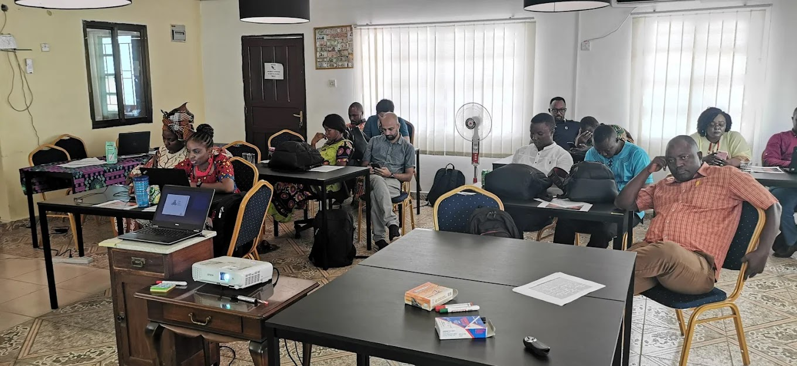
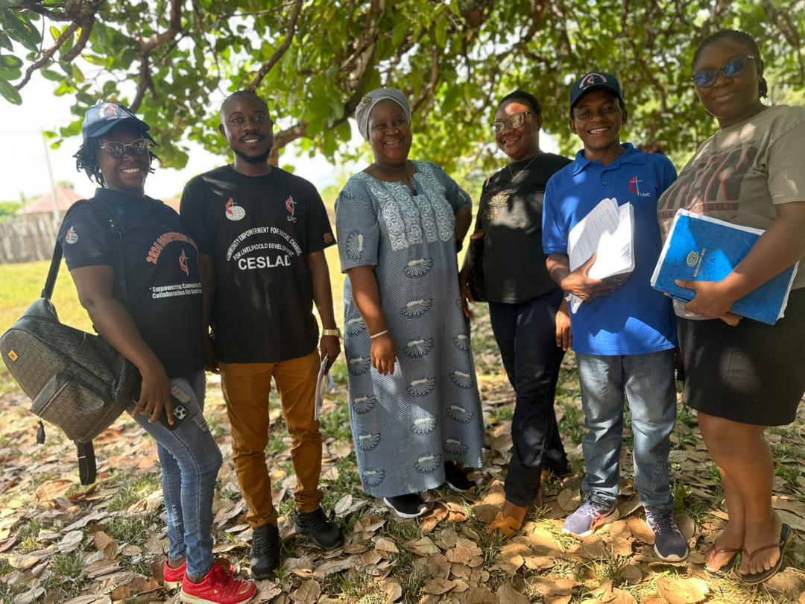

Think Africa Limited (TAL) is a non-profit company limited by guarantee established in 2018, registered in Sierra Leone (SL060418THINK02852) and the UK (14633914). We position ourselves as a feminist Consulting and Program Development Organization with a vision to create equal opportunities using the Equity approach.

Plate 01 — Who We AreThink Africa was founded as Think Africa Institute providing a wide range of consulting services for 5 years. It has gone through restructuring and Leadership Change. Today Think Africa Limited has transformed into a not-for-profit company limited by guarantee that positions itself as a feminist Consulting, and Program Development Organization; with a vision to create equal opportunities using the Equity approach.
TAL uses the Human Rights Based Approach lens to focus on the following thematic areas: Women's Rights, Education, Livelihoods, Women Led Environmental Sustainability and Good Governance — in no particular order, but positioning Women & Young People at the centre of its work.
We see ourselves as the bridge for institutions in Europe and elsewhere looking to work in West Africa and need a credible partner with local knowledge of the West Africa context, and for the local African organisation seeking people that understand the local exigencies of West Africa.
Women and Young People live in critical conditions due to systemic violation of rights and injustices that have transcended to deep rooted poverty. They have been excluded from being competent members of society; failing to realise that they are the generation that would make the future. Thus Think Africa Limited was conceptualized to join hands with like minded organizations and continue the fight for equal opportunities.
We believe that the first step to ending gender inequality and creating equal opportunities is to educate and up-skill women and youth by building collective power to challenge unequal power relations and become active agents of development; using Research and capacity building as a key strategy to create, share and shed knowledge.
We are driven to achieve a platform where knowledge is built and shared and gender equality and equal opportunities for all is achievable within our lifetime.
TAL believes that everyone should have access to equal rights in society to determine their own affairs which include present and future objectives affecting their lives. Everyone has the right to receive: Quality Basic Education, Civic Rights, Opportunities for Livelihood, and a life of dignity even in the face of disaster.
Inequity and lack of opportunities is closely perceived as but not limited to unavailability and lack of access to basic social services such as Health, infrastructure, education and food.
Lack of basic services places people in vulnerable situations; in cases of hazards these existing vulnerabilities trigger escalation into disaster and further undermines people's capacity to bounce back.
The causes of inequality are to a very large extent related to the actions or inactions of state institutions at all levels — community, chiefdom, district and national levels.
Change can only happen when women and youth are given the appropriate platforms to take control of and engage with the issues of their own development.
Collective action led by movements and greater involvement of people living in poverty as agents of change will address structural causes of inequity.
We build collective power to challenge unequal power relations through research and capacity building as key strategies to create, share and shed knowledge.
Incidents, episodes and testimonies of change including challenges and lessons learnt must be fully documented using multimedia techniques and subjected to cross learning and sharing.
Our programmes and institutional positions will be informed by our research unit which is trustworthy and evidence based, influencing and changing the opinion of key decision makers.
The human rights-based approach is the centre-piece of our work and is fully utilized for programming, implementation, monitoring and accountability.
In Sierra Leone inequity and lack of opportunities is closely perceived as but not limited to unavailability and lack of access to basic social services such as Health, infrastructure, education and food. Lack of these basic services places people in vulnerable situations; in cases of hazards these existing vulnerabilities triggers it to escalate into disaster and further undermines people's capacity to bounce back (resilience). It is also perceived as a denial of rights and injustice. We believe that this lack is one of the root causes of poverty.
We believe that some of the causes of inequality and lack of opportunities are to a very large extent related to the actions or inactions of state institutions at all levels, community, chiefdom, district and national levels.
Change can only happen when women and youth are given the appropriate platforms to take control of and engage with the issues of their own development. We will propose meaningful and well informed alternatives, strengthen institutions of poor people, build their resilience, mobilize and create linkages with like-minded organizations, institutions, coalitions and networks that work in the interest of women and Young People.
During the course of our numerous engagements using several platforms, we will ensure that incidences, episodes and testimonies of change including some of the challenges or lessons learnt are fully documented using multimedia techniques and subjected to cross learning and sharing.
Partner with us
Theory of Change · Sierra LeoneWith an understanding of our external and internal contexts, we will continue to strengthen our work with partners including those with whom we have similar goals and objectives. We will facilitate the establishment of powerful institutions of women and Young People and link them up with like-minded agencies and institutions.
We'll engage in credible, realistic and human rights inspired campaigns at local and district levels. TAL will continue to support capacity development, information gathering, dissemination and encourage right holders to take action by making effective use of participatory methodologies such as Participatory Approaches, Village Savings and Loans, Violence and Girls Clubs, Farmer Field Schools etc.
We will scale up our participation in key strategic processes such as technical working groups, task forces and steering committees. Our programmes and institutional positions will be informed by our research unit which is trustworthy and evidence based. This will influence and change the opinion of key decision makers. In all our engagements we will track progress of our programmes and communicate the change. The human rights-based approach will be the centre-piece of our work and will be fully utilized for programming, implementation, monitoring and accountability.
Our ways of working will be strategic and comprise of Consulting by doing Research, Data Collection, Capacity Building and working with partners, coalitions, networks and alliances to influence policy formulation, legal and regulatory frameworks that are in the interest of Women and Young People; we will further work with community structures to strengthen their power within to enable them raise advocacies that will influence policy change that is in their interest.
For greater impact of our work at all levels, we will work with partners with whom we share similar goals, objectives and values based on mutual respect and accountability.
We will use the profile of partners we work with to assess their strategic fit with great emphasis on their capacity level and needs. In our partner selection processes, we will be very open to constructive change but priority will be given to the constituency and strategic focus of potential partnership. Emphasis will be placed on strong governance structures and effective and efficient financial management regulations and systems.
TAL is open to working with like-minded partners particularly those who have the capacity to nurture us and ensure close supervision and support. In cases where we cannot identify such partners, we will work directly with communities.
Our relationship with coalitions, networks and alliances will be based on short term but agenda focused, common and joint programming. We will work with INGOs, NNGOs and CBOs towards the same goal. Where these coalitions do not exist, we will facilitate setting up new ones, and together reach out for capacity development support.